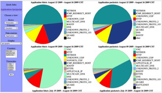

中大—苹果联合实验室位于中山大学东校区南实验楼D座303室，并针对中山大学所有师生全天开放使用。中大—苹果联合实验室已具有音频/视频处理，程序开发等实验条件，配备有Apple imac15台，Apple macpro工作站5台，提供日常教学、培训、开发的使用。
体验中心设在中山大学东校区南实验楼D103，包括苹果数字化生活中心、苹果数字化生活影视中心以及苹果数字化生活音乐中心三个体验区，学生可在开放时间随意进行体验。体验区内有苹果最薄最轻的笔记本Mac Book Air，效果最炫最酷的iPod Touch 和苹果音频制作设备等等。
凭借苹果电脑本身超强的硬件支持与图形图像处理技术，从视频剪辑到3D渲染，处理起来都会无比的得心应手，大大提高了设计效率。Final Cut Pro， Maya等预装的正版软件，再加上不定期举办的视效处理讲座和讨论班，会让从入门到高级的各类爱好者找到属于自己的发展空间。除了视频动画处理以外，实验室配备的调音版，监听器等全套音频采集系统也可以满足多媒体技术的各种需要。
中大Podcast iTunes U 平台建设主要的功能是方便教师和学生通过podCast系统上传教育视频、音频、截屏、和多种类型数据文件，目标是实现一个教学资源丰富的博客类型的师生交互系统。另一目标是通过平台建设和全世界几百个高校进行信息的整合，实现资源的共享，通过加入苹果的iTunes U的资源平台，形成一个中山大学面向全世界的教育资源共享平台，增强中山大学在全世界的影响力。
简单来说，podcast就是一种可订阅、下载及自行发布的网络广播。网友可以将网上的教学内容，各种格式音乐或者视频下载到自己的ipod、mp3播放器、手机或者其他便携式数码声讯播放器中随身收听/收看，同时也可以把自己的podcast上传到网络上与他人共享。在国外，学校中的视频分享越来越被重视起来。教师认为通过与同行的视频分享，提高学生的积极性的同时，有机会了解并学习其他教师的课堂教学中的优点；视频不再是单向的交流，学生也可以参与视频的制作，展现自己的成果和想法。正由于podcast对于传统的eLearning是一个划时代的扩充,所以网络学院跟podcast的结合也是一个很有意义的结合,由于有podcast用于远程教学在国外的成功推广的经验,所以把远程教学平台与podcast 结合风险小,而且影响深远。
该项目是基于苹果Macpro强大的计算和处理能力，在校园网骨干节点上采集流量数据进行详细分析。采集的数据被存储起来可以进行长期性的深入的网络分析。在校园网监测节点上对出入的网络流量进行实时的跟踪和监测，按时间阶段分区间地将网络信息可视化，及时发现网络的变化趋势和值得研究的问题。
对于设计艺术而言，苹果电脑自诞生以来在数字图形图像技术就发挥着无可比拟的威力，在它平台上的既能模拟真实场景，也能对各种传统艺术语言作出诠释，成为一种独特的设计工具。苹果强大的数字图形图像优势使其广泛应用于产品设计、建筑设计、广告设计、动画设计、网页设计、印刷设计、展览设计、服装设汁等艺术设计领域。在苹果实验室和校园体验店中，大部分的机器都配有正版的ADOBE的图形图像处理制作软件，供广大致力与成为设计师的同学和爱好者使用和创作。
iPod Touch，iPod Nano，iPod Classic...这些往往只有在苹果专卖店才可以体验到的超劲装备如今在这里也可以实现。实验室特配的体验中心将带给你酣畅淋漓的Shi频音频动听好看之旅。